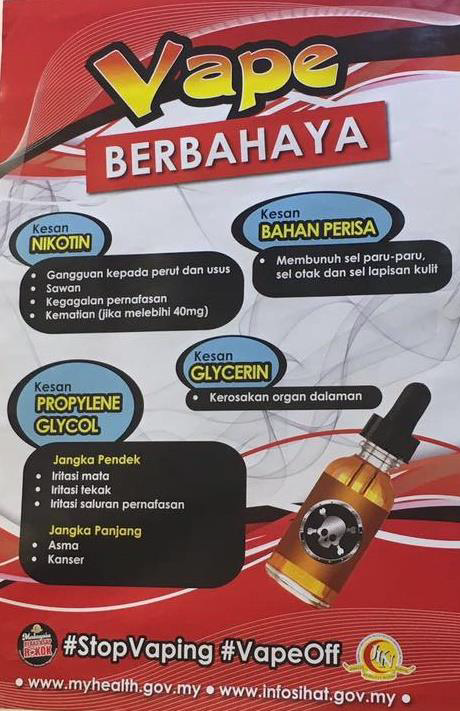

MITOS TENTANG ROKOK
Perkara ini harus diambil tahu oleh semua perokok kerana mitos inilah yang selalu menjadi pegangan yang salah selama ini. Salah tanggapan inilah yang menyelubungi minda perokok sehinggakan perokok menjadi Tidak Nampak atau seolah-olah tidak nampak keburukan rokok.
-
Merokok dapat menenangkan fikiran atau dapat menghilangkan stress
Kebiasaannya selepas makan nasi ke mana tempat yang mula-mula dituju atau apa yang perokok lakukan sebelum menyambung aktiviti lain? Tak perlu jawab. Semua orang tahu jawapannya. Perokok tegar akan rasa ketagih nikotin terutama selepas makan. Jiwa mereka tidak akan tenang selagi tidak dapat merokok. Bagi umat Islam pada bulan puasa katakan masa waktu sahur tinggal 5 minit lagi, perokok tegar akan cepat-cepat menghabiskan makanan dan kadang-kadang tidak sempat habis demi sebatang rokok. Mereka bimbang jika “tidak sempat menyambung nyawa” katanya. Inikah yang dinamakan ketenangan?
Kebiasaannya selepas makan nasi ke mana tempat yang mula-mula dituju atau apa yang perokok lakukan sebelum menyambung aktiviti lain? Tak perlu jawab. Semua orang tahu jawapannya. Perokok tegar akan rasa ketagih nikotin terutama selepas makan. Jiwa mereka tidak akan tenang selagi tidak dapat merokok. Bagi umat Islam pada bulan puasa katakan masa waktu sahur tinggal 5 minit lagi, perokok tegar akan cepat-cepat menghabiskan makanan dan kadang-kadang tidak sempat habis demi sebatang rokok. Mereka bimbang jika “tidak sempat menyambung nyawa” katanya. Inikah yang dinamakan ketenangan?
Lagi satu kalau bekalan rokok terputus di waktu tengah malam dan tidak ada sesiapa yang boleh di “pow” agak-agak jiwa perokok tenang tak nak masuk tidur? Ini kisah saya; dulu masa saya belum berhenti merokok saya akan cuba sedaya upaya saya untuk mendapatkan walau sebatang rokok pun jadilah. Jiwa saya tidak akan tenang selagi tidak mendapat bahan hikmat beracun itu. Saya sanggup memandu di waktu tengah malam untuk ke bandar berdekatan demi mendapatkan rokok di seven eleven yang boleh diakses 24 jam itu. Inikah yang dinamakan ketenangan?
Ada satu cerita lagi. Teringat masa hidup saya melarat semasa kerja makan gaji dengan government dulu. Kerja kerajaan biasalah belum cukup bulan lagi dah terkial-kial membelek duit sana sini dengan harapan ada la barang seringit dua untuk dibeli benda yang sangat penting dalam hidup. Apalagi rokok lah. Kerap kali masa ke…putusan bekalan kewangan macam tu saya sendiri (pada masa tu la) akan sanggup mencari balik puntung–puntung rokok dalam ash tray dengan harapan kot–kot ada puntung yang masih boleh dicucuh. Ya. Memang ada. Masa duit tengah banyak hisap rokok tak sempat habis dah padamkan api –› rokok itulah yang jadi sasaran masa tengah sesak. Itu cerita saya. Cerita pembaca? Mungkin ada pembaca yang kata bukan setakat dalam ash tray, kat bawah rumah pun sanggup cari puntung rokok tu masa tengah sesak. Sekali lagi saya tanya. Agak-agak tenangkah jiwa perokok jika tidak mendapat asap beracun itu semasa ketagih? Dah faham kan sekarang ketenangan yang di agung–agungkan oleh sang penagih nikotin ini hanyalah khayalan dan mitos semata-mata.
Merokok ni nampak macho sebenarnya
Ya. Masa anda merokok anda merasa seperti seorang yang macho terutama bagi remaja yang belum berkahwin. Setiap sedutan itu di sedut dan di hembus sedalam-dalamnya. Di dalam hati terdetik “oh akulah hero Hindustan atau hero Hollywood yang gagah berani menentang musuh durjana”. Gurau je. Mungkin pembaca tak pernah terdetik di hati sebegitu. Itu saya cerita mengenai perokok yang tengah merokok kat tengah lautan afrika tu…hi…hi… Anda perasan tak masa kita remaja dulu (kepada sesiapa yang mula merokok sejak remaja lah) kita rasa seperti seorang yang macho apabila merokok walaupun tidak ada orang yang nampak pun kita merokok. Kita syok sendiri je. Bila kita telah dewasa dan mempunyai pekerjaan sendiri atau sudah berkahwin perasan yang seperti seorang yang macho tu masih ada (walaupun sedikit tu kira ada la). Perasan tak perasaan tu wujud terutama bila kita hisap rokok di kedai makan atau merokok atas motosikal. Kenapa saya kata mitos?
Sebenarnya perasaan itu ditanam oleh media massa seperti televisyen. Suatu masa dulu rokok boleh iklan dekat TV. Tetapi setelah kerajaan mengharamkan iklan rokok di media massa, sebenarnya iklan itu masih ada tetapi dalam bentuk lebih halus. Di dalam drama TV atau movie kerap kali menayangkan adegan seorang hero yang sedang merancang strategi untuk melawan musuh sedang menghisap rokok. Watak jahat pula tak payah cerita lah memang selalu nampak ada rokok kat mulut. Konon-kononnya watak gangster tak kira cerita melayu ke, cina ke, india ke, orang putih ke mesti nak letak rokok kat mulut supaya nampak lebih gangster. Yang peliknya kadang–kadang tak payah cucuh pun tak mengapa. Kononnya dah nampak macho. Pelik kan?…tak cucuh pun dah nampak watak tu bagaikan watak gangster yang macho. Khayalan palsu inilah yang menjadi pegangan dalam minda perokok. Betul ke betul?
Merokok banyak idea
Dulu masa saya merokok selalu juga terpacul di mulut yang rokok ini mencetus banyak idea. Bila isteri tanya nak ke mana tu bang? Saya akan jawab “nak pergi cari idea sekejap”. Sebenarnya nak pergi merokok. Nak cari idea sebenarnya tak perlu merokok pun. Tak percaya? Dulu masa saya merokok idea untuk bantu orang dan beri manfaat kepada orang ramai tak sebanyak sekarang. Bila kita merokok sebenarnya kita menyedut karbon monoksida dan bahan-bahan beracun lain yang menyebabkan otak kita terutama bahagian memori akan rosak. Bahagian itu bila dah rosak susah nak pulih. Atau mungkin dah tak pulih. Nikotin yang kita sedut mempunyai pengaruh ketagihan yang menyebabkan kita jadi mudah pelupa. Kalau tak percaya cubalah berhenti dulu. Anda akan tahu kesannya. Eh…jangan cuba berhenti. Nak berhenti merokok buat sungguh-sungguh. Betul ke betul?
Merokok boleh menguruskan badan
Anda perasan tak yang perokok ni ada yang kurus dan ada yang gemuk. Kenapa anda kata merokok ni boleh menyebabkan anda kurus? Anda mungkin tanya saya balik…habis tu kenapa bila kita berhenti merokok badan kita naik. Ok. Dengar ni. Faktor yang menyebabkan badan seseorang naik atau tidak adalah bergantung kepada pemakanan dan tahap keaktifan seseorang. Jika anda merokok dan anda makan banyak makanan yang berlemak, tinggi kandungan gula terutama gula ringkas, anda makan tak kenyang tapi banyak minum air bergas yang kandungan gulanya terlalu tinggi, suka makanan bergoreng dan ditambah pula dengan hidup sedentary ( tidak aktif secara fizikal) serta tidak melakukan senaman maka berat badan anda akan naik mendadak. Tak percaya? Cuba la. Bukan sahaja berat badan naik malah risiko untuk mendapat penyakit kronik juga tinggi.
Bagaimana pula berat badan naik selepas berhenti merokok. Nanti saya akan ulas dalam bab cara berhenti atau petua berhenti merokok nanti. Kita bagi suspen sikit supaya anda baca sampai habis. Hi…hi…
-
Perokok ramai kawan
Bila kita merokok kita akan suka berkawan dengan perokok dan kawan kita yang merokok juga suka berkawan dengan kita. Bak kata orang “ada geng”. Maksudnya senang nak merokok sambil berbual nanti, ada kawan perokok yang boleh teman. Perokok rasa tidak berseorangan. Cuba bayangkan jika perokok berada di sekeliling orang yang tidak merokok. Contohnya kita hadiri sesuatu kursus yang mengambil masa yang lama dan kita seorang sahaja yang merokok daripada hadirin yang beratus-ratus orang tu. Agak-agak rimas tak bila ketagihan merokok tu datang. Kebetulan pula “port” untuk kita merokok pula susah nak cari. Saya pernah alami dulu. Memang rimas dan bila fikir betapa senangnya kawan–kawan yang hadir kursus tidak mencari peluang merokok. Tapi… ramai juga yang tak kisah dengan kepayahan itu. Ada yang rasa seperti seorang yang istimewa kerana ketagih rokok. Pelik.
Sebenarnya selepas berhenti merokok anda kurang suka bergaul dengan perokok terutama semasa dia sedang merokok. Bila salam dengan perokok yang baru selesai melempiaskan ketagihan nikotinnya kan bau rokok melekat kat tangan kita. Oh lupa… anda tak kisah pun sebab anda masih merokok.
Ni saya nak berpesan ni… perokok ni sebenarnya orang yang negatif. Ingat lagi tak sebelum ni yang saya dah ulas kenapa perokok dikatakan orang yang negatif. Habis tu? Kenapa masih nak berkawan dengan orang yang negatif. Hilang kawan negatif apa yang nak disusahkan. Bila mereka dah berhenti dan jadi orang yang positif nanti kita berkawanlah semula dengan dia. Betul ke betul?
-
Rokok tidak bahaya
Pernah juga jumpa artikel dari Indonesia dulu yang mengatakan rokok bagus untuk kesihatan. Masa merokok dulu saya sendiri setuju dengan artikel itu yang kononnya racun dalam rokok tu hanya rekaan sahaja. Dan ada juga jumpa dalam Youtube tentang aktivis Indonesia( Jawa) yang bermati-matian mengatakan rokok tidak bahaya dan dia sendiri mempertikaikan hukum rokok itu haram. Ye lah kita kan nak buat benda baik mestilah ada orang yang menghalang kan. Normal la tu.
Ada satu cerita lagi. Masa saya membantu orang berhenti merokok ni ada seorang dua warga mas yang bermati-matian mengatakan dia masih sihat walafiat walaupun hisap rokok dari umur remaja lagi. Orang ni pun jenis yang aktif. Kerja dia naik bukit turun bukit. Menoreh getah setiap hari. Cuti masa hujan je. Petang-petang berkebun. Alhamdulillah Allah bagi dia umur yang panjang dan kesihatan. Bagus lah. Dia kena bersyukur banyak–banyak tu sebab dia antara insan yang terpilih kerana masih sihat walafiat. Ni saya nak tanya ni. Kalau kita diberi umur yang panjang oleh Allah Swt. adakah kita yakin yang kita akan sihat walafiat seperti pakcik–pakcik itu. Agak-agak pembaca ni jenis orang yang aktif tak? Agak–agak juga… pembaca ni jenis orang yang suka jaga pemakanan tak? Kalau jawapannya adalah “tidak” maka bukankah lebih baik anda berhenti merokok.
Banyak kajian yang dilakukan oleh Kementerian Kesihatan Malaysia dan Pertubuhan Kesihatan Sedunia yang menyatakan dalam rokok ada banyak bahan kimia yang berbahaya kepada badan. Bukan setakat nikotin yang buat kita ketagih sahaja yang mendatangkan masalah kepada kita. Malah racun–racun lain seperti tar, karbon monoksida dan lain–lain amat berbahaya kepada badan. Kalau saat anda membaca tulisan ini anda sedang merokok, cuba anda sedut asap rokok dan hembus asap rokok ke tapak tangan dalam keadaan mulut terbuka seluas–luasnya. Nampak tak apa warna yang tinggal di tapak tangan anda. Warna hitam pekat kan? Itulah yang masuk dan melekat di paru– paru anda sejak anda mula merokok dulu, kini dan selamanya.
Cuba tengok dekat ibu jari anda sebelah kanan atau kiri (tangan yang anda selalu pegang rokok tu) agak–agak warna dia putih ke? Warna dia kekuningan kan. Itulah kesan nikotin dan tar yang melekat di jari anda. Itu baru jari. Yang kat dalam paru-paru?
Masih tak percaya? Cuba buka website kami kat link ni http://zakuanlr.com/blog/dasyatnya-rokok/. Cuba lihat bagaimana asap rokok menjadi fiber bila dikumpulkan. Tengok dulu baru cerita.
Ok dah tengok video tu? Agak-agak berapa banyak tar itu dah berkumpul dekat paru-paru saudara pembaca sekarang?
-
Rokok elektronik tidak berbahaya
Nikotin yang terdapat di dalam rokok biasa dan rokok elektronik juga boleh menyebabkan ketagihan yang melampau iaitu gangguan kepada otak perokok. Mengikut Kementerian Kesihatan Malaysia dalam websitenya myhealth.org.my:
“Nikotin merupakan hasil tembakau yang menyebabkan ketagihan, iaitu sejenis gangguan otak kronik. Penggunaan berpanjangan menghasilkan kebergantungan fisiologi serta dorongan yang kuat untuk menggunakan tembakau. Ketagihan ini berkait rapat dengan kadar kepantasan nikotin diserap dan sampai ke otak (Prochaska, 2015). Pendedahan otak kepada nikotin semasa remaja amat berbahaya kerana zaman remaja adalah peringkat kritikal perkembangan otak lalu menjadi pembuka laluan kepada penyalahgunaan dadah (Yuan et al, 2015)”.
“Selain daripada itu nikotin boleh menggalakkan pembekuan darah (Schaller et al, 2013) dan boleh menyerap masuk ke plasenta ibu mengandung di mana ia akan mengganggu proses perkembangan bayi di dalam kandungan (Maritz, 2009) ”.
“Nikotin serendah 2mg sudah boleh menyebabkan gangguan pada perut dan usus. Dos yang lebih tinggi boleh menyebabkan kesan yang lebih teruk, antaranya, sawan dan kegagalan pernafasan. Nikotin pada paras sekurang–kurangnya 40 mg boleh menyebabkan kematian” .
Nak tahu lebih lanjut mengenai bahaya vape rujuk kat link ni http://taknak.myhealth.gov.my/rokok-elektronik-vape/
Atau rujuk ringkasannya dalam gambar di bawah:
Masih tak percaya? Ujian yang dilakukan oleh sifu saya sendiri dalam satu ceramah beliau menunjukkan rokok elektronik dan rokok biasa mempunyai tenaga berunsur negatif. Beliau menunjukkan satu ujian bagaimana tenaga negatif hadir dalam badan apabila rokok biasa atau rokok elektronik berada pada badan. Dan bagaimana tenaga positif akan kelihatan apabila rokok biasa dan rokok elektronik itu berada jauh daripada badan. Tak percaya tak mengapa. Orang yang hadir kursus itu je yang percaya keadaan ini.